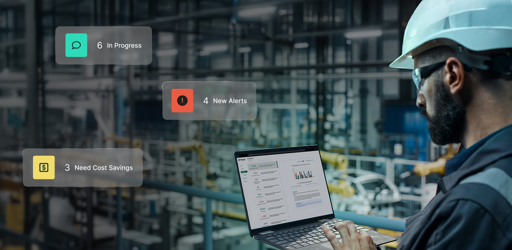

Map the action flow
Map alert, chat, and CMMS flows from sensor event to customer action across web and mobile.
Prepared for Michael Herff
Saw AssetWatch adding Customer Success capacity while the platform expands across web, mobile, AI, sensors, and CMMS handoffs. More customers need clear alerts, fast onboarding, and stable releases.

AssetWatch already shows the right promise: clear asset health, expert action, and enterprise scale.
The Customer Success push tells us AssetWatch is moving from strong deployments to repeatable scale. The hard part is not only adding CMEs or accounts. It is keeping the platform clear when more assets, alerts, chats, and CMMS handoffs arrive. Public users praise the expert help, but some ask for easier navigation and stronger alert context. If this load grows, flow gaps can eat roadmap time. That slows AI and data work.
Use a dedicated squad under AssetWatch's PO or PM. Keep scope tight for a six-week pilot focused on stability and flow quality.
Map alert, chat, and CMMS flows from sensor event to customer action across web and mobile.
Harden regression tests around asset history, alerts, comments, and permission paths before larger customer rollouts.
Tune data quality checks for missed, repeated, or low-confidence alerts using Python services and review queues.
Ship weekly demos with Michael's security needs covered by NDA, access controls, and clear handoff notes.

Factory machine data turned into OEE insight.
Read case study
Release work sped up while quality stayed protected.
Read case study